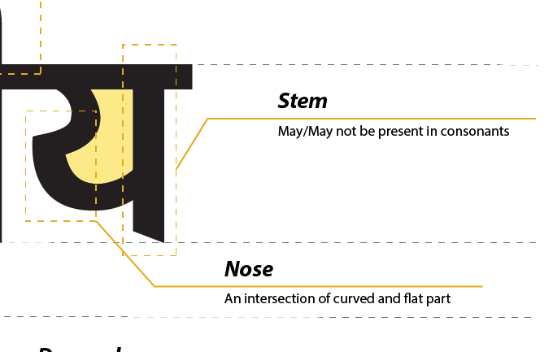
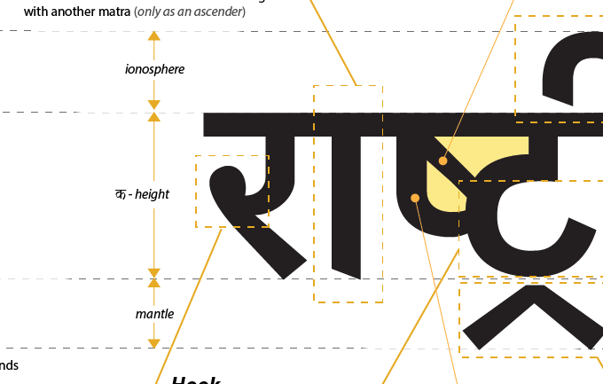

There are many who have analysed the anatomy of the Latin script, but hardly anyone who's tried to show the interesting aspects of the Devanagari. This is an attempts at that.

The first thing to notice is the ‘Roof’ of the script here. The roof that is actually a line from which all the consonants in the alphabet hang is a part of the entire typeface and plays a major role in even differentiating the pronunciation of many words that are formed.

Another thing is the many prominent features such as the ‘matras’ that I labelled as being a part of the ionosphere that is above the supporting roof of the words. Again there is also the prominent ‘Mantle’ that is below the main region and which also houses a lot of things (matras, pronunciation supporters etc.)
Devanagari is one of the most used and adopted writing systems in the world.